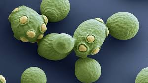

MICROBE OF THE MONTH

Saccharomyces cerevisiae
Saccharomyces cerevisiae is the best studied eukaryote and a valuable tool for most aspects of basic research on eukaryotic organisms. Saccharomyces cerevisiae has been present in both the traditional industries, used as the Baker’s or Brewer’s yeast, as well as the modern industry of biotechnology.
Saccharomyces cerevisiae is a unicellular fungus, S. cerevisiae is a small (~5 µm) single-cell eukaryote and thus contains a nucleus and other membrane-bound organelles. Yeast cells are relatively easy to culture in laboratory conditions since they do not need a complex medium for growth. Moreover, cells divide rapidly, every 90 min, under optimal laboratory conditions through the process of budding, where a smaller, genetically identical daughter cell buds off the mother cell.
Genetics
Saccharomyces cerevisiae is a unicellular fungus, S. cerevisiae is a small (~5 µm) single-cell eukaryote and thus contains a nucleus and other membrane-bound organelles. Yeast cells are relatively easy to culture in laboratory conditions since they do not need a complex medium for growth. Moreover, cells divide rapidly, every 90 min, under optimal laboratory conditions through the process of budding, where a smaller, genetically identical daughter cell buds off the mother cell.
Industrial Applications
- In Wine industry The relationship between wine and S. cerevisiae is equally long-lasting as it was proven by the presence of ribosomal DNA from S. cerevisiae in a wine jar from Egypt dated back to 3150 BC. However, this relationship was revealed not earlier than 1860 when Louis Pasteur established for the first time the ‘hidden’ world of yeast activity during the wine fermentation and eventually in 1890, when Müller-Thurgau proposed the process of controlled wine fermentations with starter cultures.
- In Bread industry Also known as baker's yeast or simply ‘the yeast’, it is used in making bread and in sourdoughs. It has been used as a starter culture since the 19th century, where the Baker's yeasts were obtained from the leftovers of the beer manufacture. In 1792 in England, the first compressed yeasts for baking and brewing were made and by 1800 they were available in northern Europe, while in the U.S.A. in 1868, a compressed yeast of an improved strain was introduced and facilitated the large-scale production of bread.
- Recombinant Protein Production Saccharomyces cerevisiae is an excellent microbial cell factory for producing valuable recombinant proteins because of its fast growth rate, robustness, biosafety, ease of operability via mature genomic modification technologies. The use of yeast as a heterologous host was pioneered in the 1980s when strains were constructed for the manufacturing of pharmaceutical proteins, like interferon-α and insulin. S. cerevisiae possesses many additional advantages for heterologous protein production. It possesses eukaryotic pathways to post-translationally process and secrete proteins to the extracellular medium, while simultaneously secreting few endogenous proteins in low amounts.
- Biopharmaceutical Production The expression of viral proteins, such as the Hepatitis B surface antigen , led to the development of the first recombinant vaccines. Nowadays, S. cerevisiae and the methylotrophic yeast Pichia pastoris are preferred hosts in vaccine development and are also used for the expression of protozoal proteins and tumour-associated antigens.
- Biofuel Production The second-generation bioethanol production involves utilisation of lignocellulosic biomass that is rich in pentose sugars, such as D-xylose and L-arabinose. S. cerevisiae is widely used for lignocellulosic bioethanol production due to its tolerance against ethanol, low pH, and high osmotic pressure. However, as S. cerevisiae cannot naturally utilise pentose sugars, the introduction of specific pentose metabolic pathways to S. cerevisiae has been the major goal of rational metabolic engineering studies for second-generation ethanol production.
conclusion
Saccharomyces cerevisiae is a versatile organism which has a long history of use in fermentation and slowly and gradually it is showing a growing role in the modern biotechnology industry. As further advancements will be made in genetic engineering and metabolic pathway manipulations, we’ll obtain an improved strain of S. cerevisiae which will help in further production of many other essential products.